Semantic Word Weighting
On this page, you will find some cool sound effects generated by our method that completely fascinated us!
These sounds were generated by editing the weights of the semantic words in the prompt. Please see examples below.
These sounds were generated by editing the weights of the semantic words in the prompt. Please see examples below.
- 1. Semantic Word Weighting For Adjective Descriptors
- A dog barking with reverb
- A frightening thriller
- An extreme guitar
- A slow piano
- 2. Semantic Word Weighting For Verb Descriptors
- A crying baby
- A laughing baby
- A whispering voice
- A screaming crowd
If you would like to try these algorithms with your own prompts, please see our Google Colaboratory Notebooks. Let us know if you discover cool sound effects that fascinate you too!
1. Semantic Word Weighting For Adjective Descriptors
Each sound sample below is associated with an adjective descriptor, highlighted in yellow.
The sample with weight=1 is the original 'unedited'/'unweighted' sample. The descriptor is edited or weighted from -2 (leftmost sample) to 3 (rightmost sample).
The sample with weight=1 is the original 'unedited'/'unweighted' sample. The descriptor is edited or weighted from -2 (leftmost sample) to 3 (rightmost sample).
Prompt 1: A dog barking with reverb
Observe how the amount of reverb in the audio changes as the descriptor value changes. The rightmost sample has more reverb compared to the leftmost sample.
Observe how the amount of reverb in the audio changes as the descriptor value changes. The rightmost sample has more reverb compared to the leftmost sample.
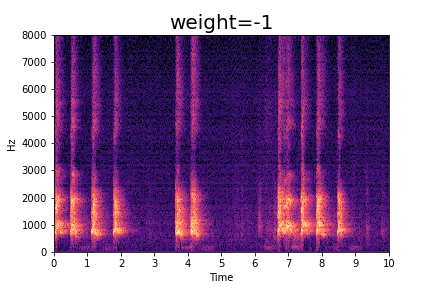

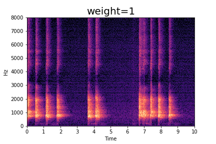
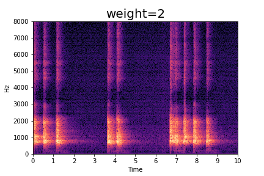
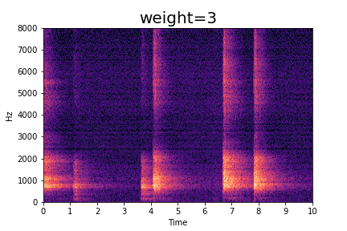
Prompt 2: A frightening thriller
Observe how the amount of the adjective 'frightening' in the audio changes as the descriptor value changes. The model generates sounds with speech for the least 'frightening' sound. The rightmost sample has music from a thriller movie to indicate more 'frightening' content.
Observe how the amount of the adjective 'frightening' in the audio changes as the descriptor value changes. The model generates sounds with speech for the least 'frightening' sound. The rightmost sample has music from a thriller movie to indicate more 'frightening' content.
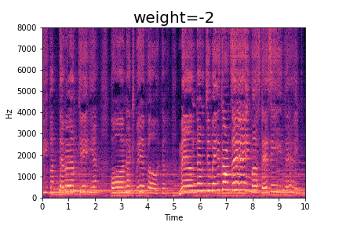


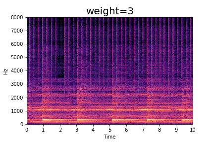
Prompt 3: An extreme guitar
Observe how the amount of the adjective 'extreme' in the audio changes as the descriptor value changes. The model generates music played by an acoustic guitar to indicate an less 'extreme' guitar. The rightmost sample has music from an electric guitar to indicate more 'extreme' guitar content.
Observe how the amount of the adjective 'extreme' in the audio changes as the descriptor value changes. The model generates music played by an acoustic guitar to indicate an less 'extreme' guitar. The rightmost sample has music from an electric guitar to indicate more 'extreme' guitar content.
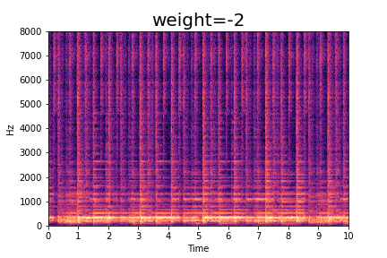
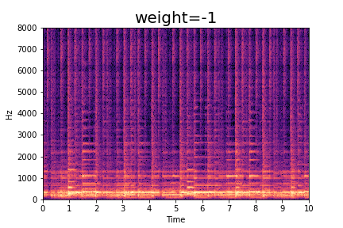
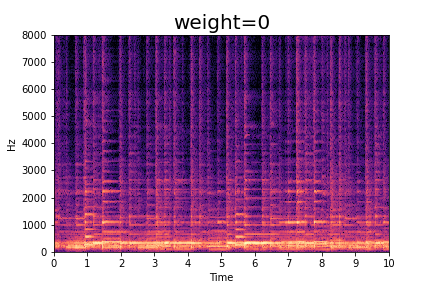
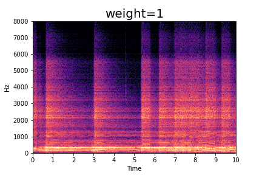

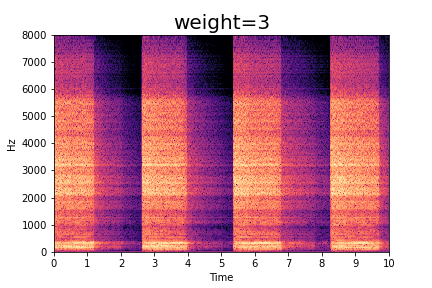
Prompt 4: A slow piano
Observe how the amount of the adjective 'slow' in the audio changes as the descriptor value changes.
The model generates some music played in a fast tempo for weights < 0. The sounds becomes more slow in tempo as weight increases.
Observe how the amount of the adjective 'slow' in the audio changes as the descriptor value changes.
The model generates some music played in a fast tempo for weights < 0. The sounds becomes more slow in tempo as weight increases.
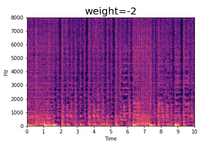
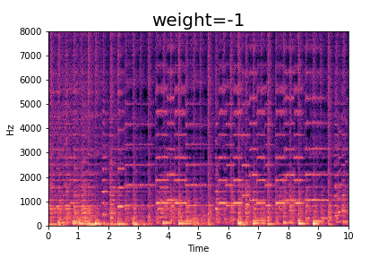
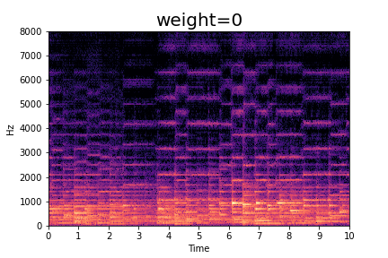
2. Semantic Word Weighting For Verb Descriptors
Prompt 1: A crying baby
Observe how the amount of the verb action of 'crying' in the audio changes as the weight value changes. For instance, for weight = -1, we do not hear much crying. Just some babbling.
The crying slowly turns to wailing as the weight increases.
Observe how the amount of the verb action of 'crying' in the audio changes as the weight value changes. For instance, for weight = -1, we do not hear much crying. Just some babbling.
The crying slowly turns to wailing as the weight increases.
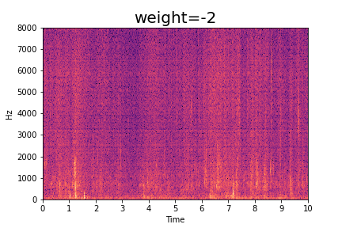
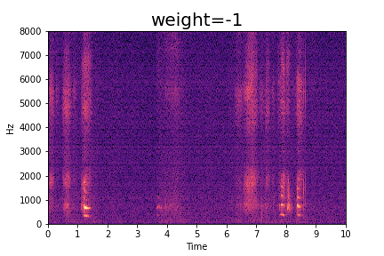

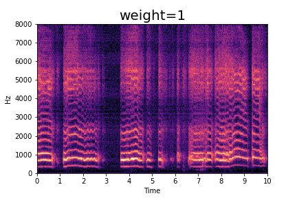

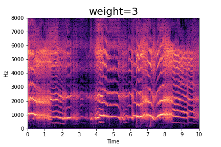
Prompt 2: A laughing baby
Crying baby sounds are one of the most distressing sounds in the world. So now, lets listen to a baby laughing!
Observe how the amount of the verb action of 'laughing' in the audio changes as the weight value changes. For instance, for weight = -1, we do not hear much crying. Just some babbling.
The babbling slowly turns to laughing as the weight increases.
Crying baby sounds are one of the most distressing sounds in the world. So now, lets listen to a baby laughing!
Observe how the amount of the verb action of 'laughing' in the audio changes as the weight value changes. For instance, for weight = -1, we do not hear much crying. Just some babbling.
The babbling slowly turns to laughing as the weight increases.

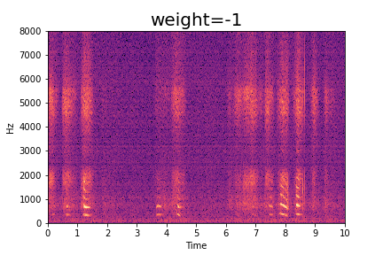

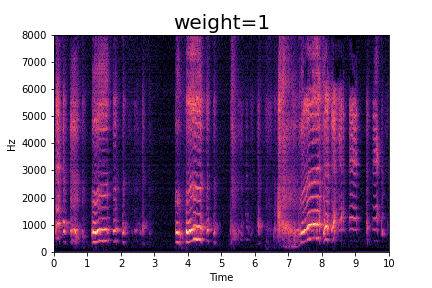


Prompt 3: A whispering voice
Observe how the amount of the verb action of 'whispering' in the audio changes as the weight value changes. For instance, for weight = -1, we hear some speech. Although unintelligible, the sound is that of a person speaking.
The speaking slowly turns to whispering as the weight increases.
Observe how the amount of the verb action of 'whispering' in the audio changes as the weight value changes. For instance, for weight = -1, we hear some speech. Although unintelligible, the sound is that of a person speaking.
The speaking slowly turns to whispering as the weight increases.
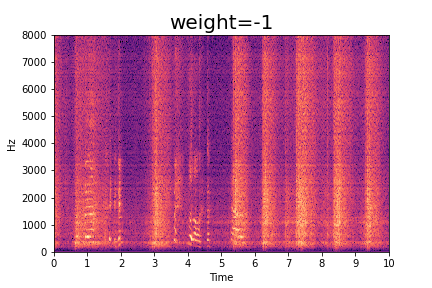
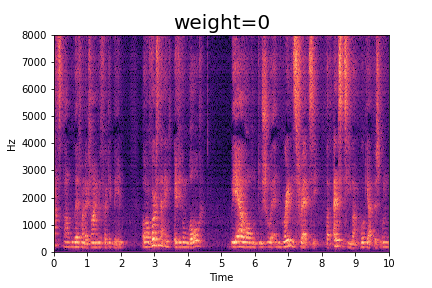
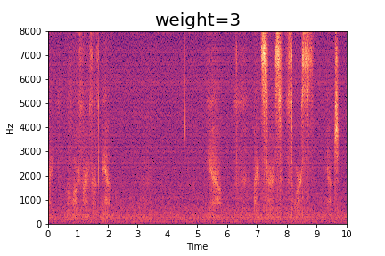
Prompt 4: A screaming crowd
Observe how the amount of the verb action of 'screaming' in the audio changes as the weight value changes.
For instance, for weight = -1, we hear some sound made by a crowd.
The screaming slowly turns louder as the weight increases.
Observe how the amount of the verb action of 'screaming' in the audio changes as the weight value changes.
For instance, for weight = -1, we hear some sound made by a crowd.
The screaming slowly turns louder as the weight increases.
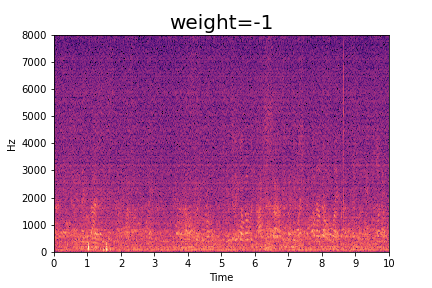
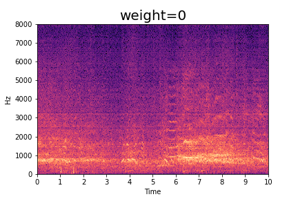